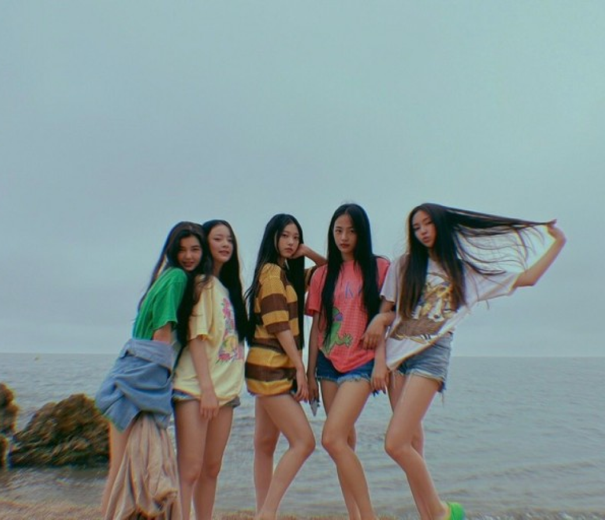

2022년 11월 30일
맑음 일식
내가 만든 쿠키 너를 위해 구웠지But you know that it ain't for free, yeah내가 만든 쿠키너무 부드러우니자꾸만 떠오르니널 choco-chip으로Sprinkle로입맛 버리게 만들고 싶어숨기고 있지만 널 더 보고 싶어If you want itYou can get itIf you want it네 목소리를 또 들려줘 boy식사는 없어 마음속을 녹이지So good, yeahLooking at my cookie역시 향기부터 다르니 (Taste it)한입은 모자라니널 choco-chip으로Sprinkle로정신 못 차리게 만들고 싶어숨기고 있지만 널 더 보고 싶어If you want itYou can get itIf you want it